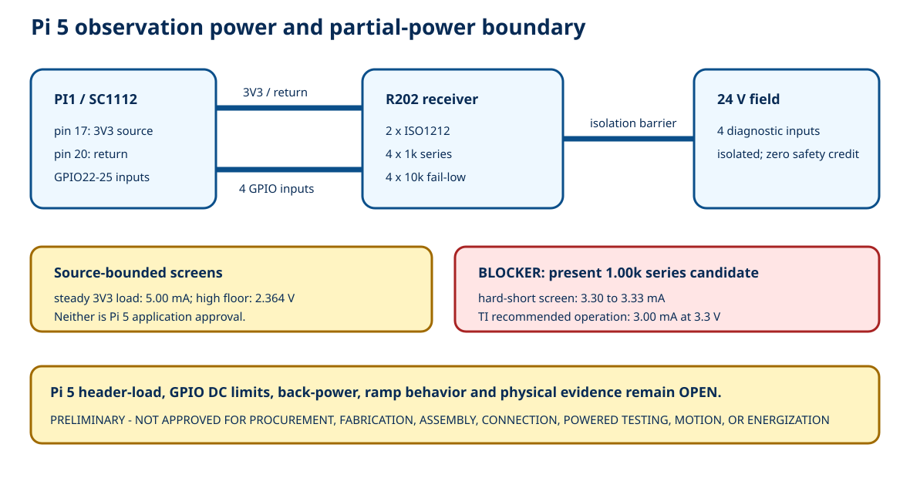

5.00 mAsteady 3V3 source-load screen
2.364 Vsource-side high floor, not Pi margin
3.333 mAhard-short screen at RSO -1%
0physical acceptance results
BLOCKER: the existing 1.00 kohm RSO candidate does not bound a 3.3 V hard short within TI's +/-3 mA recommended output-current envelope. RSO and the resulting Pi input margin require correction and review.
Connected topology

Explore partial-power states
Pi 5 V
Pi 3V3
Field 24 V
Authority
TI output basis:
Expected observation:
Evidence:
Signal and fault screens
| Case | Formula | Result | Limit | Disposition |
|---|---|---|---|---|
| logic high source-side floor | (3.0 V - 0.4 V) x 10.0k/(1.0k+10.0k) | 2.364 V | Pi 5/RP1 VIH not published in controlled source | MARGIN NOT CLOSED |
| logic low source-side ceiling | TI VOL maximum at specified load; external pulldown assists low | <=0.400 V before unknown Pi leakage | Pi 5/RP1 VIL and leakage not published in controlled source | MARGIN NOT CLOSED |
| signal hard-short to COMPUTE_0V; nominal RSO | 3.3 V / 1.00 kohm | 3.300 mA | TI recommended IOH magnitude 3 mA at 3.3 V | BLOCKER - EXCEEDS RECOMMENDED OPERATING CURRENT |
| signal hard-short to COMPUTE_0V; RSO at -1% | 3.3 V / 0.990 kohm | 3.333 mA | TI recommended IOH magnitude 3 mA at 3.3 V | BLOCKER - RSO VALUE/FAULT STRATEGY MUST CHANGE |
| signal hard-short to PI_3V3 while ISO output low | source tolerance and output clamp data required | SELECTION REQUIRED | TI +/-3 mA recommended output current; Pi rail tolerance absent | FAULT CURRENT NOT CLOSED |
Open manufacturer questions
| Question Id | Addressee | Question | Reason | Sent | Answer |
|---|---|---|---|---|---|
| RFI-001 | Raspberry Pi | For Raspberry Pi 5 SC1112, what continuous, transient/inrush and ambient-derated external load is permitted from physical pin 17/3V3, including board-revision conditions? | 5.00 mA steady screen and 200 nF load cannot be approved without a Pi 5 header-rail limit | NO | OPEN |
| RFI-002 | Raspberry Pi | Publish or identify Pi 5/RP1 GPIO VIH, VIL, leakage, capacitance, clamp/injection-current and unpowered-pin limits for GPIO22-25. | direct-input high/low and fault margins cannot close from current RP1 register documentation | NO | OPEN |
| RFI-003 | Raspberry Pi | What leakage or applied-voltage limits ensure no back-power through 3V3 or GPIO pins in OFF, STANDBY and rail-ramp states? | HAT+ defines compatibility obligation but not quantitative limits for this non-HAT+ topology | NO | OPEN |
| RFI-004 | Raspberry Pi | Does the exact passive carrier plus separately mounted, Pi-3V3-powered ISO1212 receiver require additional sequencing, buffering or protection for Pi 5? | application review is absent | NO | OPEN |
| RFI-005 | Texas Instruments | Provide ISO1212 OUT leakage/clamp behavior with VCC1 unpowered or between 1.7 V and 2.25 V while field inputs are energized and external 10k pulldowns are present. | datasheet marks output undetermined; back-power/false-state calculation cannot infer more | NO | OPEN |
| RFI-006 | Texas Instruments | Confirm an output-series resistance/current envelope that keeps hard shorts within recommended operation at the actual Pi 3V3 tolerance while preserving Pi 5 input margin. | present 1.00k candidate screens above the 3mA recommended output-current magnitude | NO | OPEN |
Acceptance remains blank
| Test Id | Test | Execution State | Result | Evidence Uri | Approver |
|---|---|---|---|---|---|
| OCP-ACC-001 | received PI1/R202/R204 identity and revision record | NOT EXECUTED | OPEN | ||
| OCP-ACC-002 | unpowered topology continuity and isolation | NOT EXECUTED | OPEN | ||
| OCP-ACC-003 | Pi OFF plus field OFF leakage | NOT EXECUTED | OPEN | ||
| OCP-ACC-004 | Pi OFF/STANDBY plus field ON back-power voltage/current | NOT EXECUTED | OPEN | ||
| OCP-ACC-005 | Pi ACTIVE plus field OFF four-low readback | NOT EXECUTED | OPEN | ||
| OCP-ACC-006 | Pi ACTIVE plus field ON four-channel truth table | NOT EXECUTED | OPEN | ||
| OCP-ACC-007 | 3V3 steady load/droop/ripple | NOT EXECUTED | OPEN | ||
| OCP-ACC-008 | 3V3 startup inrush and ramp | NOT EXECUTED | OPEN | ||
| OCP-ACC-009 | Pi brownout/shutdown/restart trace | NOT EXECUTED | OPEN | ||
| OCP-ACC-010 | each signal open fault | NOT EXECUTED | OPEN | ||
| OCP-ACC-011 | each signal short-to-return fault | NOT EXECUTED | OPEN | ||
| OCP-ACC-012 | each signal short-to-3V3 fault | NOT EXECUTED | OPEN | ||
| OCP-ACC-013 | signal cross-short fault | NOT EXECUTED | OPEN | ||
| OCP-ACC-014 | qualified review and separate test authorization | NOT EXECUTED | OPEN |
Primary-source register - Power-state matrix - Fault matrix - Open holds